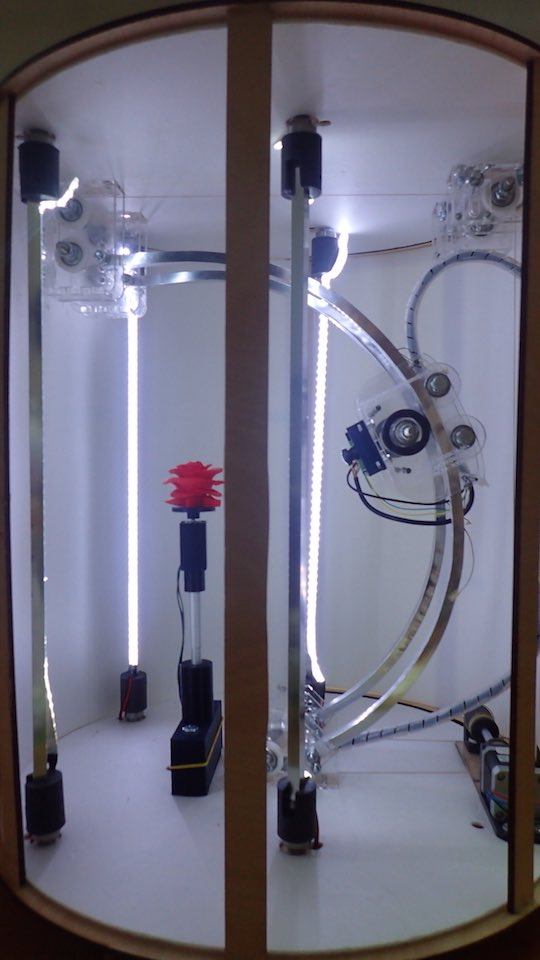

****************************************************************************************************************
DOWNLOAD:
****************************************************************************************************************
V0.4 // ANIMATE VERSION // BETA
Consisting of:
STRUCTURE
--> 5mm lasered plywood structure--> External structure in 3mm Depron
--> Double track consisting of 1 cm C-section aluminum trim
--> Dolly for the photographic camera attached to the tracks for the circular movement of the instrument
CAMERA
--> Photographic Camera 9MP - HackHD – with an integrated system for jpg image recording on mini SD paper.-->Composit video port for visualizing the images on the external monitor of the system.
AUTOMATION AND MOVEMENT
--> 1 Stepper NEMA 17 motor connected with Kevlar cables and a system of pulleys that allow the photographic machine to move along the aluminum tracks.--> 1 Stepper NEMA 8 motor integrated with a telescopic arm; the arm will allow the rotation of the object - positioned on the integrated plate/dish - to be scanned
AUTONOMUS AND ROTATING LED LIGHT SYSTEM
--> 4 Strips of LED lights fitted to 1 cm C-section aluminum trim; the lights are autonomous and rotate through 360°C to provide appropriate illumination of the object and the background.ELECTRONICS
--> Electronic “Modified Saschakit” for the micro-controller with the integration of 2 separate POLOLU units for the independent control of each Stepper motor.CODE
--> Code developed in the IDE Arduino language.// VIDEO CAMING SOON // The expected release date for Version 1.0 is November 1st, 2015 //
****************************************************************************************************************
-->RHINOCEROS STRUCTURE DESIGN
-->PLYWOOD STRUCTURE

-->DOUBLE ALUMINIUM TRACK TRIM
-->CAMERA AND SUPPORT
-->AUTOMATION AND MOVEMENTATION

-->AUTONOMUS AND ROTATING LEDs LIGHT SYSTEM
-->ELECTRONICS
-->CODE
/*
Fab Academy 2015 -Pierluigi De Palo -
Photogrammetric Fab Scanner -V0.4 // ANIMATE VERSION // BETA - CODE 0.1 VERSION -
*/
const int stepsInFullRound = 400;
// stepper camera
const int stepPin1 = 12;
const int dirPin1 = 11;
// stepper object
const int stepPin2 = 10;
const int dirPin2 = 9;
// camera
const int shutterPin = 13;
// Set pins
void setup() {
// setup stepper camera
pinMode(stepPin1, OUTPUT);
pinMode(dirPin1, OUTPUT);
digitalWrite(stepPin1, LOW);
digitalWrite(dirPin1, LOW);
// setup stepper object
pinMode(stepPin2, OUTPUT);
pinMode(dirPin2, OUTPUT);
digitalWrite(stepPin2, LOW);
digitalWrite(dirPin2, LOW);
// setup hackhd
pinMode(shutterPin, OUTPUT);
// enable pololu drivers
pinMode(8, OUTPUT);
digitalWrite(8, LOW);
}
void run(boolean cameraStepper, boolean runForward, double speedRPS, int stepCount) {
digitalWrite((cameraStepper) ? dirPin1 : dirPin2, runForward);
for (int i = 0; i < stepCount; i++) {
digitalWrite((cameraStepper) ? stepPin1 : stepPin2, HIGH);
holdHalfCylce(speedRPS);
digitalWrite((cameraStepper) ? stepPin1 : stepPin2, LOW);
holdHalfCylce(speedRPS);
}
}
void holdHalfCylce(double speedRPS) {
long holdTime_us = (long)(1.0 / (double) stepsInFullRound / speedRPS / 2.0 * 1E6);
int overflowCount = holdTime_us / 65535;
for (int i = 0; i < overflowCount; i++) {
delayMicroseconds(65535);
}
delayMicroseconds((unsigned int) holdTime_us);
}
// Runs the motor once in forward direction and once to the opposite direction.
// Holds the motor still for 1 sec after both movements.
void runBackAndForth(boolean cameraStepper, double speedRPS, int rounds) {
run(cameraStepper, true, speedRPS, stepsInFullRound * rounds);
delay(1000);
run(cameraStepper, false, speedRPS, stepsInFullRound * rounds);
delay(1000);
}
// Runs the motor in forward direction
void runForth(boolean cameraStepper, double speedRPS, int rounds) {
run(cameraStepper, true, speedRPS, stepsInFullRound * rounds);
}
// Runs the motor in backward direction
void runBack(boolean cameraStepper, double speedRPS, int rounds) {
run(cameraStepper, false, speedRPS, stepsInFullRound * rounds);
}
void takePicture() {
digitalWrite(shutterPin, HIGH);
delay(10);
digitalWrite(shutterPin, LOW);
delay(3000);
}
void objectCycle() {
for (int i = 0; i < 18; i++) {
runForth(false, 7, 11); // moves object stepper [false] right 22 steps at speed 7 (for left runBack)
takePicture();
}
}
void startCycle() {
for (int i = 0; i < 3; i++) {
runForth(true, 7, 10); // moves camera stepper [true] downward 10 steps at speed 7 (for upward runBack)
objectCycle();
delay(1000);
}
}
void loop(){
startCycle();
}